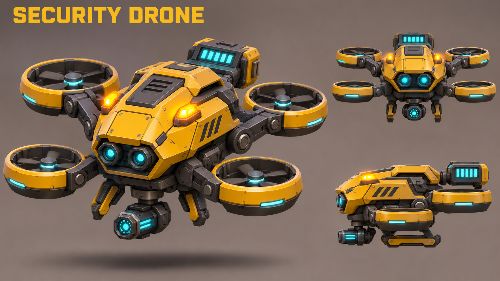
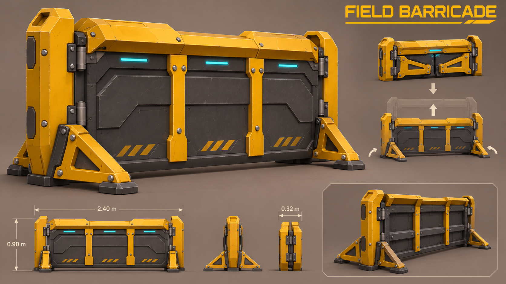

Field R&D — revised baseline
3 November 2026 · Concept, editable Blender assets and reusable project blueprints. No game export.
What is installed
- The last-enemy text box is replaced by a small amber threat diamond, with a minimal edge marker if offscreen.
- The refinery accepts up to 50 raw ore per run. Existing small timed batches draw from that load. It does not instantly convert 50 ore. Cargo beyond the load stays untouched; unlocked automation may start another load.
- The project contains animated R&D station, security drone and field barricade model assets and reusable blueprints. They are not placed free into the starting camp.
- The security drone component follows the player, shoots visible enemies, drains its combat battery, warns at low power, then explodes once. Only nearby enemies take blast damage; walls block the blast. Battery time, movement, damage, range and explosion values are editable.
Jam update: Field R&D is now purchasable after the first operation. The initial live list supports security drone and barricade orders. See the jam changes and sound choices. The rest of the proposed catalogue, including additional refineries, remains future work.
Updated shop list
Emergency repair kit, decoy beacon and remote mine detonation have been removed. The maintenance drone is replaced by a combat security drone.
| Purchase | Type | Effect / limit |
|---|
| Target priority controller | Once | Choose what each sentry protects. No flat damage increase. |
| Security drone kit | Repeatable equipment | One active drone. Proposed starting battery: 60 combat seconds, five-second warning, then a three-metre enemy-only blast. It is consumed when drained. Final price and balance need playtesting. |
| Security clone | Once | One pistol-equipped helper, supplied with ammunition. Later-tier support. |
| Auxiliary ammo press | Equipment; one additional | Second production line with its own bucket. |
| Auxiliary refinery | Equipment; one additional | Parallel processing. Each machine has a 50-raw-ore load limit, drawing from shared stock with separate reservations. |
| Coolant canister | Repeatable consumable | Temporary boost to one selected machine. Choose ammo production or refining. |
| Field barricade kit | Repeatable, deployment limit to tune | Place a destructible obstruction to guide spiders into defence lanes. Not invulnerable cover. |
R&D station
5 animation clips
Sample rotation, research cycle, shelf deployment/retraction and drawer service animation. Editable separate mechanical parts; one combined skinned mesh for game export, seven material sections.
GLB model · Editable Blender workshop
Blueprint: Assets/Blueprints/Mining/Research/ResearchStation.byteblueprint
Security drone


Six clips: hover, deploy, aiming sweep, fire, battery drain and overload. Four real ducted rotors, two front cameras, underbody emitter and removable battery assembly. GLB model.
Blueprint: Assets/Blueprints/Mining/Research/SecurityDrone.byteblueprint. Its operation binding targets this project's mining operation. Rebind it when reusing the blueprint in another scene. Runtime battery state is exposed on the Security Drone component; purchase and replacement availability await the shop implementation.
Field barricade


Four clips: idle, deploy, retract and impact. Telescoping panel and four hinged supporting feet. Blueprint includes a collision wall, health and camp-repositioning marker. GLB model.
Checks
Native model import and rendering passed for all three assets. All 15 animation clips target the correct model nodes; sampled poses have finite, bounded geometry. Mechanical joints visibly change during playback. All three project blueprints also spawn with their correct components and model bindings.
Refinery and drone checks cover the 50-ore run, partial loads, preservation of small batch sizes, capped upgrade purchases, battery drain, one-shot depletion, nearby versus distant damage, friendly safety, wall protection and removal of spent drones. Existing operation-director regressions also pass.
Gameplay check results · Native import results · Blueprint spawn results · Actual threat-icon preview
References were generated with the built-in image tool. Model shapes are editable low-poly interpretations of those references, not pixel-exact reconstructions. Generated references and model sources are also copied to the project's SourceArt/Research Support folder.